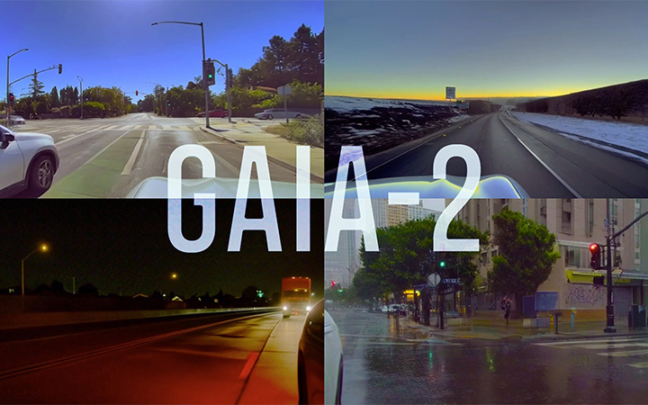
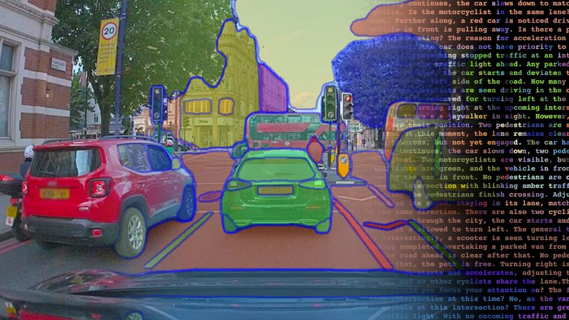
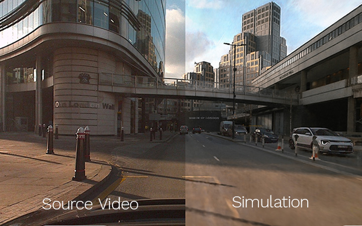
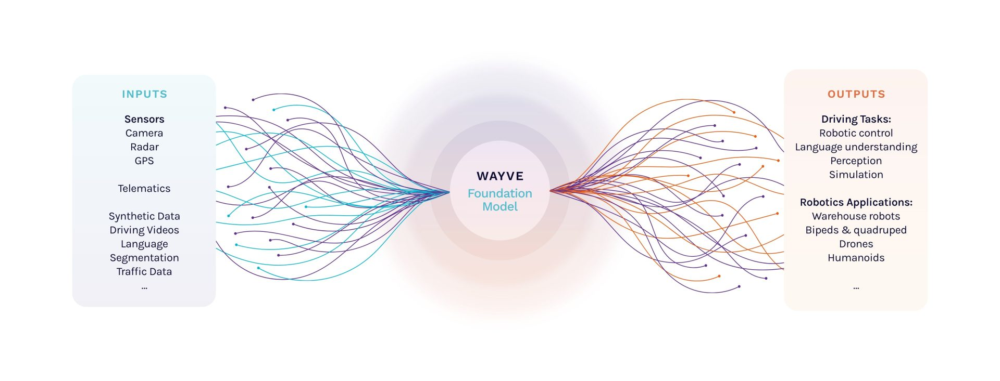

Wayveは英国ロンドンに拠点を置く自律走行AIスタートアップ（2024年にソフトバンクが買収）である。同社は「AV2.0」と呼ぶエンドツーエンド学習アプローチを特徴とし、ルールベースのシステムではなく、大規模なニューラルネットワークで走行全体を学習させる方針を採用している。Wayve Scienceページは、その研究成果の集大成であり、生成型ワールドモデル（GAIA）、自然言語統合（LINGO）、ニューラルレンダリングを中心とした研究プログラムを公開している。
Wayveの科学的目標は、「自律走行とその先の現実世界の課題に取り組むエンボディドAIにおける科学的ブレークスルーを達成すること」にある。エンボディドAI（Embodied AI）とは、物理世界で行動するエージェントのためのAI——すなわち、知覚・判断・行動を一体的に学習するシステム——を指す概念であり、Wayveはこれを自律走行の根幹に据えている。
同社の研究は主に以下の3つの柱で構成される。

GAIAはWayveの中核技術であり、テキスト・映像・アクション入力を受け取り、リアルな走行シナリオ動画を生成する生成型ワールドモデルである。自動運転AIの学習に必要な多様なデータをコスト効率よく生成するとともに、安全上重要な稀少シナリオ（急な割り込み、緊急回避、悪天候など）を制御された形でシミュレートできる。
最新世代のGAIA-2は、以下の特徴を持つ。
GAIA-1はGAIAシリーズの初代モデルであり、ビデオ・テキスト・アクションをマルチモーダルに処理して自律走行向けワールドモデルを実現した先駆的研究である。

LINGOはWayveが開発するビジョン・言語・アクションモデルであり、自律走行AIの解釈可能性（Explainability）と言語制御を実現する。
LINGOの実用的な意義は、AIの「ブラックボックス」問題に対処することにある。走行AIが何をどう判断しているかを言語で可視化することで、安全性の検証・規制対応・ユーザー信頼の向上に貢献する。

Wayveはニューラルレンダリング技術（NeRFベース）を用いて、実走行データから光リアルな3D走行環境を再構築する。これにより以下が実現する。

Wayveの研究プログラム全体に共通するのは、大規模なファウンデーションモデル（Foundation Model）への注力である。GAIA・LINGOはいずれも、大量の走行データで事前学習した汎用的な表現を活用し、特定タスクへファインチューニングするパラダイムを採用している。これはLLM（大規模言語モデル）が言語タスクで示したスケーリング則を自律走行に応用するアプローチであり、Wayveが「AV2.0」と呼ぶ次世代の自律走行開発手法の核心をなす。
Wayve Scienceページに掲載されている研究論文を、発表年順（新しい順）で示す。
Wayveの研究の軌跡は、同社の設立思想を反映している。2018年の「Learning to Drive in a Day」は、強化学習と実車でわずか1日で自律走行を習得できることを示した挑戦的な論文であり、Wayve設立の象徴的な成果である。その後、模倣学習・確率的予測・セグメンテーション・鳥瞰図予測と研究領域を広げながら、2021年の「Reimagining an Autonomous Vehicle」でAV2.0という統一フレームワークを提唱した。
2023年以降はLLM・生成AIの波を自律走行に取り込み、GAIA-1によるワールドモデル生成、LINGOによる言語統合へと発展した。2025年のGAIA-2・SimLingoはその最先端であり、カメラのみ（Vision-Only）で閉ループ走行を実現しながら、言語との整合を図る方向に研究が収束しつつある。
Wayve Scienceは、エンドツーエンド学習を核とした一貫した研究プログラムを持つ。GAIAによるワールドモデル生成は合成データと評価の両面でAV開発の課題を解決し、LINGOは言語によってAIの解釈可能性と操作性を高め、ニューラルレンダリングはリアルなシミュレーション環境を提供する。これらは個別の研究ではなく、スケーラブルな自律走行AIを構築するための統合的なエコシステムを形成している。
2018年のシンプルな強化学習実験から、2025年の150億パラメータ規模のワールドモデルまで、Wayveの研究の蓄積は「ルールを書かず、すべてを学習させる」という信念の深化を示している。